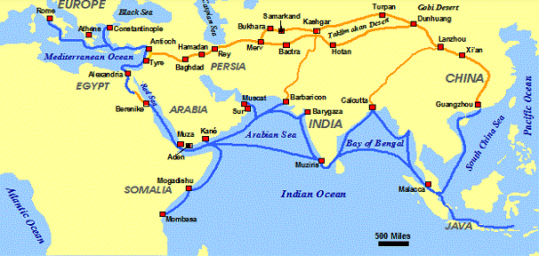
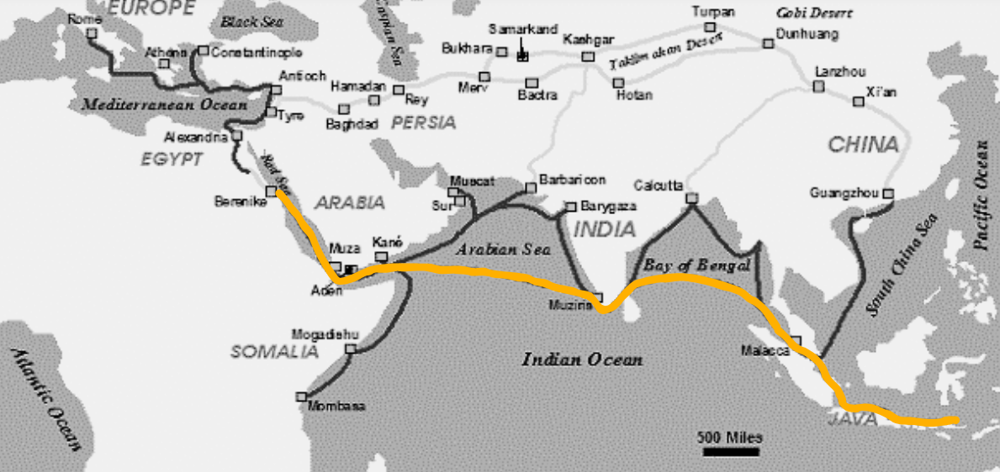
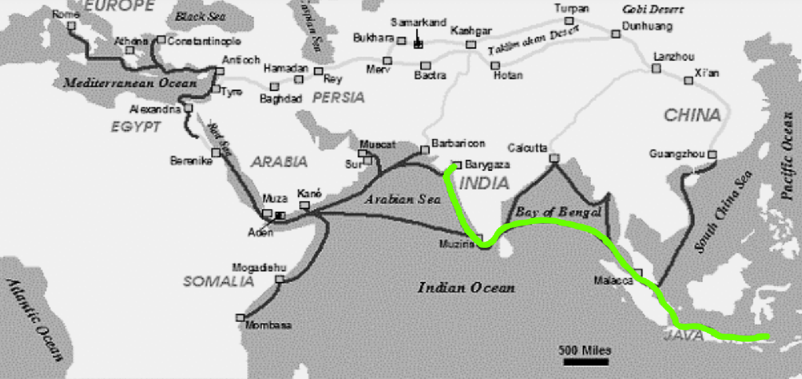
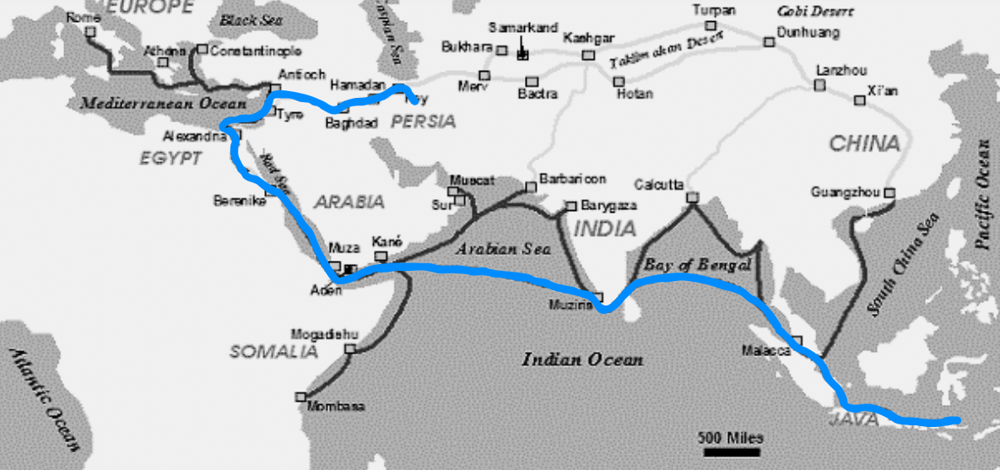
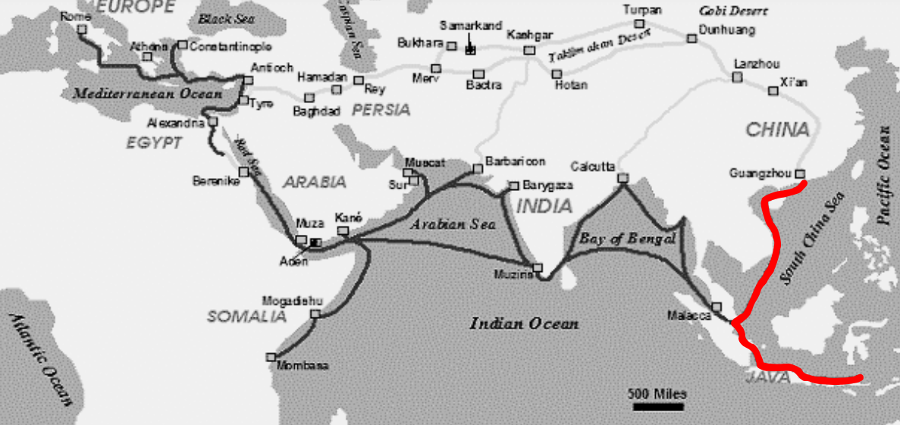

Sebelum masuknya islam ke Indonesia yang saat itu masih bernama Nusantara, sebagian besar masyarakat
menganuti sistem kepercayaan Hindu/Buddha.
Dengan masuknya Islam ke Indonesia/Nusantara, terjadi akulturasi/pergabungan antara budaya Islam dan
Hindu/Buddha dengan hasil yang masih bisa dilihat sampai sekarang.
Hal ini telah menyebabkan berbagai teori yang muncul tentang caranya Islam masuk dan menyebar di Indonesia.
Teori-Teori masuknya Islam ke Indonesia

Gambar penyebaran Islam di dunia timur
Teori Arab

rute Arab/Mekah
Teori yang dikemukakan oleh para sejarawan Barat (van Leur, T.W. Arnold, Crawfurd, Niemann, dan de
Hollander) menyatakan bahwa masuknya islam di Indonesia
langsung berkelibatan dengan pedagang Arab/Mekkah dan terjadi di abad ke-7.
Para pedagang Arab memiliki tujuan untuk melakukan perdagangan dengan Indonesia dengan sekaligus
berdakwah, yang menyebabkan islam memasuki Indonesia.
Teori Gujurat

rute Gujurat/India
Teori yang dibuat oleh Snouck Hurgronje mengusulkan bahwa Islam masuk ke Indonesia melalui perdagangan
dengan Gujarat, India di antara abad ke-7 sampai 13.
Menurut teori ini, islam disebarkan oleh pedagang Gujarat yang telah memeluk agama islam melalui ajaran
orang Arab yang telah bermukim di Gujuran pada abad ke-7.
Teori Persia

rute Persia/Iran
Teori yang dibuat oleh P.A. Hoesein Djajadiningrat menyatakan bahwa Persia (sekarang Iran) berperan
dalam penyebaran Islam ke Indonesia.
Pedagang Persia yang berlayar melintasi jalur perdagangan maritim membawa serta dengan mereka
ajaran-ajaran islam.
Hubungan perdagangan dan kebudayaan antara Persia dan Indonesia menyebabkan penyebaran islam.
Teori Cina

rute peta_cina
Teori yang dibuat oleh Hamka dan Kong Yuanzhi (sejarawan Tionghoa) ini menyatakan bahwa pedagang muslim
dari Tiongkok dalam menyebarkan Islam ke Indonesia di abad ke-7.
Pada masa Dinasti Tang, di daerah Kanton, Zhang-Zhao, Quanzhou, dan pesisir Cina bagian selatan, telah
terdapat sejumlah komunitas muslim.
Komunitas-komunitas ini kemudian melintasi jalur perdagangan maritim dan membawa ilmu islam ke
Indonesia.
Cara-cara dakwah yang dilakukan
Perdagangan
Penyebaran Islam melalui perdagangan merupakan cara dakwah yang paling pertama dilakukan di Indonesia.
Beberapa pedagang Islam menggunakan kesempatan tersebut untuk
melakukan dakwah dengan menyebarkan sikap perdagangan yang jujur, santun, serta mulia, sehingga menarik
banyak penduduk Indonesia untuk masuk Islam.
Beberapa pedagang tersebut bahkan bermukim di Indonesia, dan permukiman tersebut kemudian berkembang
menjadi komunitas-komunitas Islam.
Perkawinan
Sebagian dari pedagang yang telah bermukim menikah dengan wanita pribumi terutama putri dari bangsawan
atau raja. Dikarenakan perkawinan tersebut, banyak keluarga
bangsawan atau raja yang masuk ke agama Islam agar para pedagang menetap dan membuat perkampungan yang
disebut Pekojan, yaitu perkampungan dengan orang yang berketurunan
India tapi beragama Islam.
Pendidikan
Para mubalig mendirikan lembaga pendidikan di bebarapa wilayah Indonesia. Lembaga-lembaga ini telah
berdiri sejak pertama kalinya Islam masuk Indonesia.
Nama lembaga tersebut berbeda di setiap daerah, misalnya di Jawa dinamakan pondok pesantren, di Aceh
dinamakan meunasah, dan di Kalimantan dinamakan langgar.
Di lembaga tersebut disediakan pendidikan bagi calon kiai dan ulama, yang setelah menamatkan pendidikan
mereka kembali ke kampung masing-masing untuk menyebarkan
agama Islam
Hubungan Sosial
Para mubalig yang menyebarkan Islam menjalin hubungan sosial dengan rakyat Indonesia dengan aktif
mengikuti kegiatan sosial dengan mereka. Sikap mubalig yang sopan, santun,
pandai, dan dermawan membuat berbagai warga Indonesia tertarik dan masuk Islam. Sikap mereka yang suka
membantu satu sama lain serta mengajarkan ilmu Islam dengan bijak dan
tidak memaksa serta berdampak dengan yang membuat Islam tertermia oleh masyarakat secara mudah.
Seni
Para mubalig menggunakan seni-seni Hindu/Buddha yang telah terakar dalam di budaya mereka, dengan
mengembangkan dan mengkuatkan seni-seni yang sudah ada. Cabang seni yang dikembangankan
antaranya adalah seni bangunan, pahat/ukir, tari, musik, dan sastra. Contohnya pada seni bangunan, dalam
beberapa masjid bisa dilihat motif-motif ukiran yang berasal dari candi Hindu/Buddha.